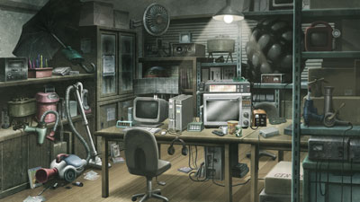
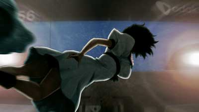

Okabe Rintaro -- aka Okarin -- is an eccentric college student who dreams of conspiracy and chaos. Adopting the persona of a mad scientist, he spends his time developing oddball gadgets with his friends in their makeshift laboratory.
Okabe Rintaro -- aka Okarin -- is an eccentric college student who dreams of conspiracy and chaos. Adopting the persona of a mad scientist, he spends his time developing oddball gadgets with his friends in their makeshift laboratory.
SERN, John Titor, the IBN 5100, the Butterfly Effect, and the 11 theories of time travel -- when chance brings these elements together in Akihabara, Japan, the fate of the world hangs in the balance.
What will Okarin choose when he holds the future in his hands?
“It's me. You're not going to believe what happened today. First, a satellite crashed into Radio Kaikan. Then, thousands of people vanished from the streets of Akiba. Finally, Makise Kurisu came back to life just three hours after I found her dead. I know this doesn't make sense, but it's all true!”
Have you ever heard of serendipity? Serendipity is when you're searching for one thing, but find something else -- something amazing that you never thought possible. We discovered that our PhoneWave (name subject to change) has the ability to send emails to the past. That's right. It's a time machine!
By hacking into SERN's database, we found hints for how to improve the PhoneWave (name subject to change). We thought that no one would know what we were doing, but we should have seen the signs. We should have stayed away. The hand of conspiracy was closer than I ever imagined, and the price for my hubris... was far too great.
Have you ever heard of serendipity? Serendipity is when you're searching for one thing, but find something else -- something amazing that you never thought possible. We discovered that our PhoneWave (name subject to change) has the ability to send emails to the past. That's right. It's a time machine!
